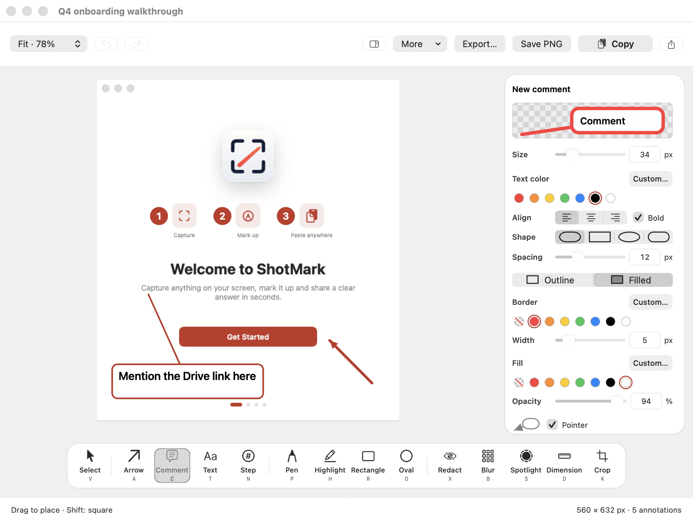
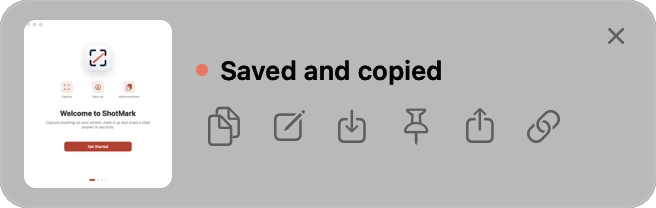

Capture anything
An area, a window, a whole screen or a scrolling page, each with its own shortcut.
ShotMark is Kantiv’s Mac app for screenshots, GIFs and narrated video. Press Stop and the Google Drive link is already in your clipboard.
ShotMark is a Mac app. Open this page on your Mac to download it.
Three steps and you’re capturing. Download didn’t start? Try again.
Everything you used Loom and a screenshot tool for, in one app that lives in your menu bar.
An area, a window, a whole screen or a scrolling page, each with its own shortcut.
Narrate a walkthrough with a camera bubble, or record a GIF; press Stop and the Drive link is in your clipboard.
Arrows, comments, numbered steps, blur and redact, crop and text recognition in one editor.
Pin a capture to your screen, set your own shortcuts, and let ShotMark update itself.


A small panel confirms the save without pulling you out of your work: Copy, Edit, Save As, Pin to screen, Share, or put a Google Drive link in your clipboard.
About a minute. The installer is signed and notarized, so macOS opens it without warnings.
Click ShotMark.dmg in your browser’s downloads, or find it in your Downloads folder.
Drop the icon on the Applications folder. If you open it from the installer instead, ShotMark offers to move itself.
macOS asks once for Screen Recording; the welcome walks you through it and your first shot.
There is no ShotMark server. The only connections are GitHub for updates and Google for your own Drive.
Built for Apple silicon and Intel, macOS 13 or later, and notarized by Apple.
Captures save to your Pictures folder; videos you share go to your own Google Drive. No telemetry.
New versions arrive in the app; install this once and you are done.